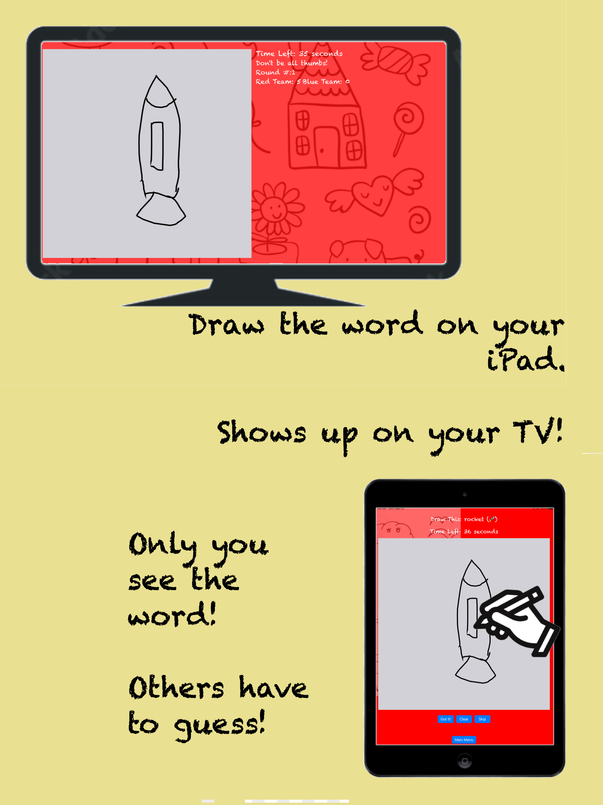

Draw Me If You Can
** Game requires connecting to an AirPlay enabled Television or Display **
"Draw Me If you Can!" is a party game that plays like the classics "Pictionary" and "Win, Lose or Draw". Unlike most phone games that you play against the phone, With "Draw Me if You Can" you play with others with the help of this app. To play this game you need an iPhone or iPad and an AirPlay enabled screen. This may be a TV connected to an Apple TV or a newer Roku box. Many newer TVs have AirPlay built in. If you have ever "casted" your iPhone screen to your TV. You have AirPlay on your screen. So before you play, connect your iOS device to your screen by using screen mirroring. The can be done from "Control Center"
"Draw Me If You Can?" needs two teams, with each team having at least 2 players. During each round, one person on the team will be the “artist” and will have the iPhone/iPad and they will draw the challenge words they see on the canvas within the time allowed.
The rest of the team players are “guessers” and will look at the TV and see the drawing being made. When the artist hears that a guesser has figured out the word they click on the “Got It” button. The canvas will clear and the next word will appear. The current team will get a point.
The artist can clear the canvas if they need to start over and try to draw the current word. If the word is too hard, or the artist wants to skip it, they press the "Skip" button and a new word comes up. However, the team loses a point for skipping.
"Draw Me If You Can" is free to try out with a trial list of words, but if you upgrade you get a lot more words and three different difficulty levels.
Kids can play on the easy level since each word has an emoji. Kids can even practice their reading with "Draw Me If You Can"
OR Point your Camera at:
Styled with Pico.css